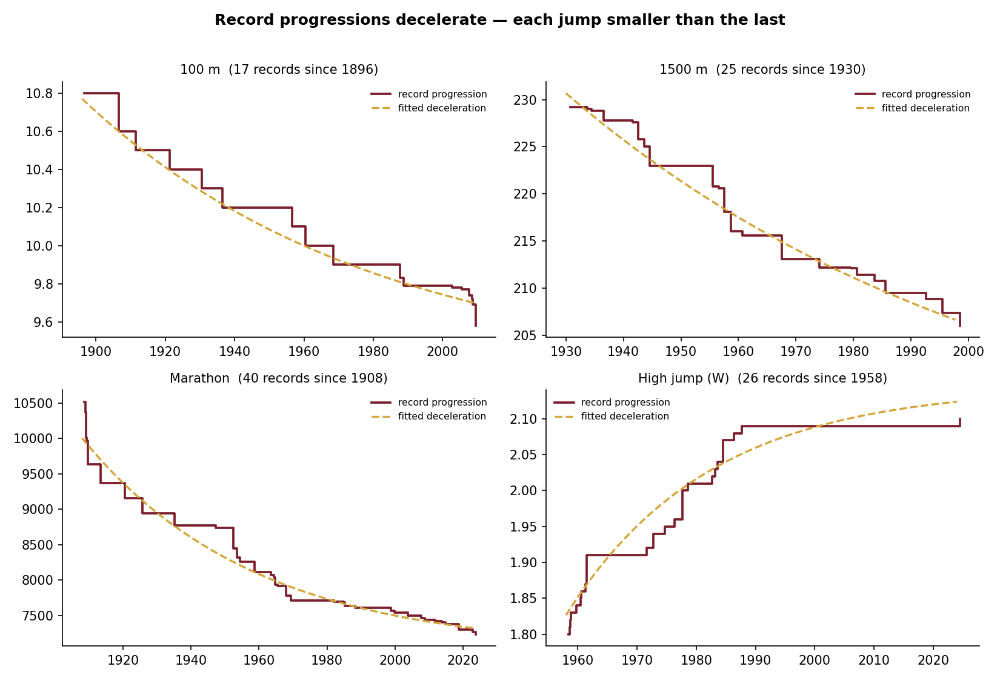
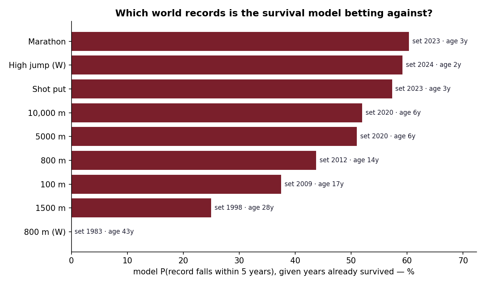

A world record has a lifespan. It is born the day it is set and dies the day someone beats it — and the records standing today simply haven't died yet. That is exactly the shape of a survival analysis: durations, some of them still running. So I turned a century of athletics into survival data — ~250 record "reigns" across nine events — and let the model tell us how long records live, why that's changing, and which current records look most exposed.
Records fall fast — but far less than they used to
The median record survives only about a year and a half: someone is usually right behind. But that number hides a heavy tail, and the tail is growing. Split the survival curve by era and a record set since 1980 clearly outlives an older one — the modern game is harder to move. A proportional-hazards model agrees: being a modern record roughly halves the chance of being broken, and records set by a big margin last longer still.

Every progression bends toward a wall
Plot each event's record over time and the same shape appears everywhere: each new record shaves a little less than the one before, the curve flattening toward some human limit. For the women's 800 m and high jump that plateau has plainly arrived; for the distance events the curve is still dropping.

So which record falls next?
Because a record's risk is highest early, the cleanest forecast comes straight from the survival curve: given that a record has already survived so many years, what's the chance it falls in the next five? Fresh records score high — the 2023 marathon (~60%) in the super-shoe era, the 2024 women's high jump (~59%). Old records have earned their safety by surviving the dangerous years — and Kratochvílová's 1983 women's 800 m comes out near zero, the statistical picture of a record no one expects to fall.

A note on the data
The progressions come from Wikipedia, but those pages bury the real record history among top-lists and side tables — scrape carelessly and you get truncated or fictional records. Every event here had to pass a hard test: its reconstructed best must equal the current ratified world record. Nine events passed; the rest were left out rather than shown half-true. The code and full method are on GitHub.